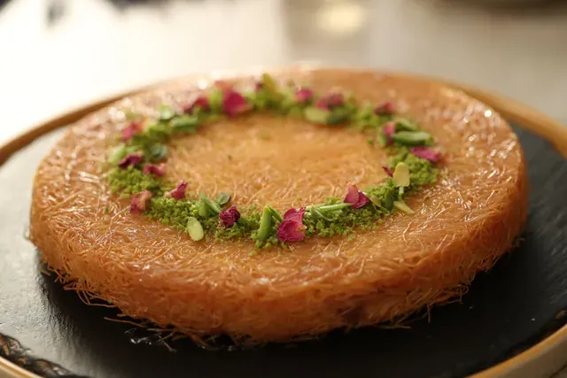

Desserts
Dango
Chewy Japanese rice dumplings glazed in sweet soy sauce.

Every step is ticked off. Want to cook it again?
Desserts
Chewy Japanese rice dumplings glazed in sweet soy sauce.

Desserts
Layers of strawberries, mascarpone cream and ladyfingers. No baking.

Desserts
A rich, crumbly chocolate dessert with toasted walnuts.